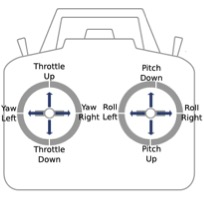

RC Controller¶
This is how to use the RC Controller
Manual Controls¶
The Iris + can always be manually controlled no matter what flight mode it is in.
In order to arm the Iris for flight: 1. All safety checks must be passed (See Failsafes) 2. The safety button must be solid red 3. The rear LED must be flashing green 4. Return to Launch (RTL) is off
Once the Iris is ready to be armed and all personnel are a safe distance away you will move the left stick to the bottom-right hand corner (throttle down & yaw right). The propellers will begin to spin and you will be ready for flight.
Switching Modes¶
- You are able to switch between flight modes mid-flight by flipping the switch with labels STD, LTR, AUTO.
- The RTL switch will cause the IRIS to return to its original launch position and land.
- The CH7 (Channel 7) switch will cause the Iris to land in its current position.